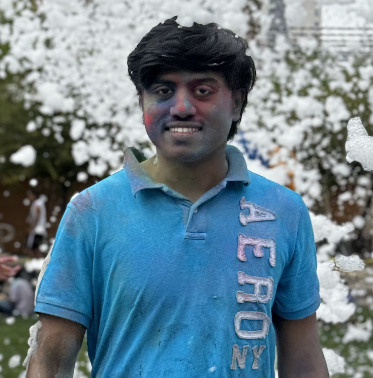

Neha Nishal Goud Sharvayigari

About me
I am a Masters in Software Engineering Student at ASU expected to graduate in May 2025. I have 8 months of experience as a Full Stack Software Engineer at Fiserv-a MNC which deals with POS, Exception Processing and Transaction Research etc. And I have 3 months of expereince at Kore.ai as a NLP Engineer intern where I have dealt with optimizing the performance of Fundamental engine built on Chatscript and Machine Learning by reducing the response time. I also have around 8 months expereince as a Fullstack Software Engineer at Dariwnbox wherien I worled on Teams bot, Web bot. Currently I am actively seeking full time and Co op opportunities to work on similiar lines.
Education
- Master's in Software Engineering - Arizona State University (08/2023 - 05/2025)
Work Experience
- Fullstack Software Engineer - Darwinbox Pvt Inc.
04/2022 - 10/2022
- SpearheadedthecompletelifecycleofanenterprisechatbotprojectintegratedwithMicrosoftTeams,enhancingcommunication tools using Node.js, PHP, and the Microsoft Bot Framework.
- Designedandimplementedfeaturesthatincreasedoperationalefficiencyby30%,leveragingdeepinsightsintouserbehaviorto tailor functionalities.
- Playedakeyroleinacross-functionalteamthatdevelopedscalable,high-availabilitysystems,crucialforsupportinglargeuser bases during peak loads, aligning with practices of building robust and scalable systems.
- Technology Program Analyst - Fiserv
08/2021 - 03/2022
- OrchestratedtheredesignoftheEP/TRapplication,enhancingtransactionprocessingcapabilitiesanduserexperienceby optimizing the workflow using Java and Oracle SQL.
- Implementedstreamlineddeploymentprocessesthatreducedsetuptimesandboostedsystemstabilityacrossserviceplatforms.
- Directedmultidisciplinaryteamstorefineresourcedistribution,boostingprojectdeliveryefficiencyby15%andstrengthening
collaborative efforts across departments.
Skills
- Programming: ⭐️⭐️⭐️⭐️⭐️
- TechStack Range: ⭐️⭐️⭐️⭐️
- Problem Solving ability: ⭐️⭐️⭐️⭐️